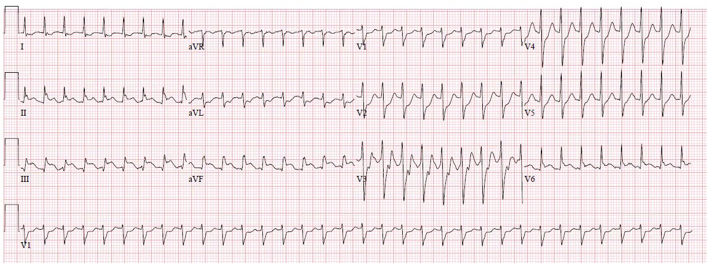
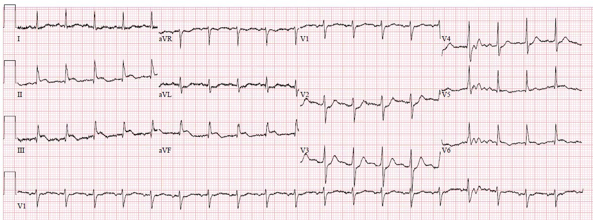
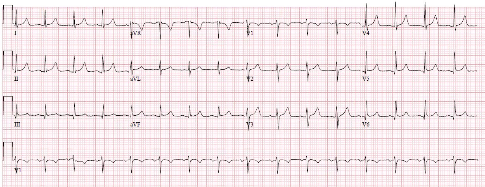
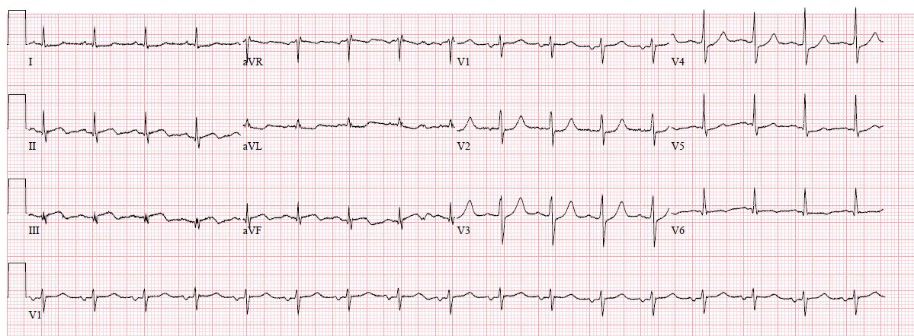
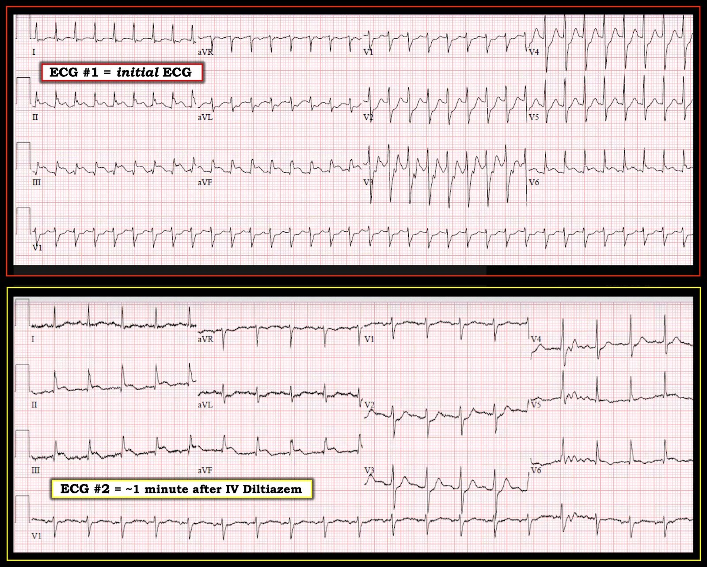

26/11/2018 — Rối loạn nhịp? Thiếu máu cục bộ? Cả hai? Sốc điện, thuốc, tiêu sợi huyết hay phòng thông tim? Bạn quyết định.
Bản dịch tiếng Việt của bài "Arrhythmia? Ischemia? Both? Electricity, drugs, lytics, cath lab? You decide." – Dr. Smith’s ECG Blog. Giữ nguyên toàn bộ 7 hình ảnh của bản gốc.
Bài viết của Pendell Meyers, có chỉnh sửa của Steve Smith
Một bệnh nhân nam 60 mấy tuổi đến viện vì khó thở và cảm giác đè nặng ngực từng lúc trong vài ngày qua. Ông bị tăng huyết áp và nhịp tim nhanh, công hô hấp tăng nhẹ. Đây là điện tâm đồ ban đầu của ông:


Khi nhóm chúng tôi nhìn điện tâm đồ này, dĩ nhiên chúng tôi nhận thấy ST chênh lên (STE) rất lớn ở các chuyển đạo dưới, kèm ST chênh xuống (STD) ở V1-V5, I và aVL, và ST chênh lên ở V6. Tuy nhiên chúng tôi cũng nhận thấy nhịp nhanh, đều, QRS hẹp, không có sóng P, tần số khoảng 200 nhịp/phút, và do đó không phải nhịp xoang ở bệnh nhân 60 mấy tuổi này. Châm ngôn “STEMI típ 1 (ACS, nứt vỡ mảng xơ vữa) không có nhịp tim nhanh trừ khi đang sốc tim” không áp dụng được khi nhịp không phải nhịp xoang. Chẩn đoán phân biệt cho nhịp QRS hẹp, đều và nhanh gồm nhịp xoang, SVT (bao gồm AVNRT, AVRT, nhịp nhanh nhĩ, v.v.) và cuồng nhĩ (một nhịp trên thất khác, thường được xét riêng với các SVT). Do đó bệnh nhân này hoặc đang có một dạng SVT nào đó, hoặc đang cuồng nhĩ.
Cuồng nhĩ, khi đều, phải đang dẫn truyền theo tỷ lệ 1:1, 2:1, 3:1, v.v.
Nếu là 1:1, tần số thất đều 200 do cuồng nhĩ sẽ đòi hỏi tần số cuồng là 200, và như vậy là quá chậm đối với cuồng nhĩ (trừ khi bệnh nhân đang dùng một thuốc chống loạn nhịp nhóm I như flecainide, thuốc làm chậm dẫn truyền trong nhĩ và chậm tần số cuồng). Cuồng nhĩ khi không có thuốc làm thay đổi thường có tần số từ 240-360 nhịp/phút. Hơn nữa, phần lớn nút AV của người lớn tuổi không thể dẫn truyền ở tần số 200 nhịp/phút.
Nếu là 2:1, tần số cuồng sẽ phải là 400 nhịp/phút. Như vậy là quá nhanh đối với cuồng nhĩ.
Trường hợp cuồng nhĩ thường gặp nhất cho tần số thất khoảng 150 nhịp/phút, do kích thước trung bình của tâm nhĩ và tốc độ dẫn truyền bình thường trong nhĩ (tạo ra tần số nhĩ khoảng 300 nhịp/phút), kết hợp với khả năng dẫn truyền điển hình của nút AV (thường là blốc 2:1 khi có một nhịp nhĩ chạy 300 nhịp/phút).
Vì vậy chúng tôi hỏi bệnh nhân gần đây có dùng thuốc gì mới không.
Ông trả lời: “Tôi vừa bắt đầu uống flecainide tuần trước.” Xem lại hồ sơ bệnh án xác nhận ông đã được cho dùng flecainide để điều trị rung nhĩ.
Thông tin mới này làm chẩn đoán cuồng nhĩ trở nên khả dĩ hơn nhiều: thứ nhất, rung nhĩ và cuồng nhĩ liên quan chặt chẽ với nhau, và thứ hai, điều này khiến tần số cuồng 200 nhịp/phút (với dẫn truyền 1:1) là khá có khả năng.
Quay lại việc diễn giải điện tâm đồ: Trong ca này, nhịp tim có quan trọng với bạn không? Nếu có, tại sao?
Nhịp tim có quan trọng! Vì nhiều lý do, trong đó có những lý do sau:
1) Sóng cuồng nhĩ được biết rõ là có thể giả ST chênh lệch, cũng như che giấu những ST chênh lệch thật sự do thiếu máu cục bộ khỏi mắt người đọc. Trong một số trường hợp, có thể nhìn thấy thiếu máu cục bộ “xuyên qua” sóng cuồng, trong khi ở những trường hợp khác phải cắt được rối loạn nhịp thì mới phân biệt rõ được thiếu máu cục bộ.
2) Nhịp nhanh ở mức độ này có thể gây ra thay đổi đoạn ST theo nhiều cách. Thứ nhất, có thể chỉ đơn giản là ST chênh xuống lan tỏa (tất yếu kèm ST chênh lên soi gương ở aVR) liên quan đến nhịp nhanh mà không phản ánh thiếu máu cục bộ. Thứ hai, nhu cầu tăng do nhịp nhanh cực độ có thể vượt quá khả năng cung cấp đủ máu của các động mạch vành (do bệnh ba nhánh mạch vành hoặc bệnh thân chung có sẵn từ trước, có hoặc không kèm ACS). Trong trường hợp này, có ST chênh xuống lan tỏa do thiếu máu cục bộ dưới nội tâm mạc, dĩ nhiên kèm ST chênh lên soi gương ở aVR. Cuối cùng, nếu một vùng cơ tim được cấp máu bởi một tổn thương gây hạn chế dòng chảy nặng (nhưng không nhất thiết tắc hoàn toàn) đột ngột phải chịu nhu cầu tăng vọt do nhịp nhanh cấp, thì mất cân bằng cung/cầu có thể lớn đến mức mô cơ tim bị thiếu máu cục bộ xuyên thành cấp, cả dưới nội tâm mạc lẫn dưới thượng tâm mạc, và có thể dẫn đến nhồi máu (y như trong trường hợp nhồi máu cơ tim do tắc (Occlusion MI) kinh điển do huyết khối). Trường hợp này là cùng một biến cố sinh lý như OMI xét về hậu quả trên cơ tim, do đó có các đặc điểm điện tâm đồ giống hệt, tuy nhiên có thể không hề có ACS!
Vì vậy bạn thực sự cần quan tâm nhịp tim là gì, và bạn nên tự hỏi:
Liệu mình có đang bị đánh lừa, tưởng thấy ST chênh lên do có thể là sóng cuồng nhĩ?
Có phải bên dưới nhịp đó là một STEMI rõ ràng?
Nếu mình xử lý nhịp, thay đổi ST có hết không?
Ông ấy có đủ ổn định để thử chuyển nhịp không? Ông ấy có đủ mất ổn định để cần sốc điện chuyển nhịp không? Thay đổi thiếu máu cục bộ trên điện tâm đồ có chắc chắn đồng nghĩa với nhịp “không ổn định” và vì thế bắt buộc phải sốc điện chuyển nhịp không?
Dấu hiệu sinh tồn của ông:
Huyết áp 176/92
Tần số tim 202
Độ bão hòa oxy SpO2 98%
Tần số thở 20
Khám: Công hô hấp tăng nhẹ. Vã mồ hôi nhẹ. Trông mệt mỏi nhưng hoàn toàn tỉnh táo, nhận thức tốt. Phổi trong. Các chi được tưới máu tốt.
Bạn sẽ làm gì và theo thứ tự nào?
Đánh giá tình hình tại giường của chúng tôi như sau:
Với chúng tôi, bệnh nhân không có vẻ bệnh nguy kịch hay mất ổn định cấp. Ông không có vẻ đang mất bù ngay trước mắt chúng tôi. Chúng tôi cảm thấy mình có vài giây để suy nghĩ về bước tiếp theo. Trong thời gian này, chúng tôi đã kích hoạt phòng thông tim (cath lab). Chúng tôi tin rằng các ST chênh lệch trên điện tâm đồ lúc nhập viện là quá mức tương xứng và về hình thái không phù hợp với việc chỉ là sóng cuồng nhĩ giả ST chênh lên – chúng tôi nghĩ thực sự có một dòng tổn thương nhìn thấy được. Nhưng chúng tôi nhận ra rằng hình ảnh tổn thương này có thể là do OMI, hoặc thứ phát do tần số cực nhanh kết hợp với một tổn thương có sẵn từ trước (STEMI típ II). Dù là trường hợp nào, phải xử lý nhịp trước tiên, vì nó đang làm nặng thêm cả hai dạng thiếu máu cục bộ và có thể điều trị nhanh hơn một chỗ tắc. Trong kịch bản tốt nhất, mọi ST chênh lệch có thể hết sau vài phút có tần số tim bình thường, khiến nhồi máu cơ tim do tắc ít có khả năng hơn. Ngược lại, nếu thực sự có OMI nằm bên dưới nhịp đó, việc bình thường hóa nhịp sẽ giúp phát hiện và xử trí nó nhanh hơn.
Chúng tôi đã bàn về một số lựa chọn dùng thuốc và dùng điện. Trước tiên chúng tôi cho adenosine 6 mg. Có một chỗ ngắt tạm thời trong nhịp, nhưng nhiễu đã cản trở việc nhìn thấy các sóng cuồng lộ ra vào thời điểm đó, rồi tần số lập tức nhảy trở lại 202 nhịp/phút.
Tiếp theo chúng tôi tiêm tĩnh mạch nhanh 15 mg diltiazem, thuốc này sẽ làm chậm dẫn truyền AV và làm lộ rõ sóng cuồng (hoặc, nếu là PSVT, điều ít có khả năng, thuốc sẽ cắt cơn). Diltiazem không hiệu quả lắm trong việc chuyển cuồng nhĩ về nhịp xoang, vì vậy không nên trông đợi kết quả này. Khoảng 1 phút sau, nhịp ngắt từ 202 nhịp/phút sang như sau:


Đây là điện tâm đồ nền lưu trong hồ sơ để so sánh:


Tần số tim thấp hơn được duy trì, cũng như các thay đổi đoạn ST ở trên, trong 10 phút tiếp theo tại phòng hồi sức. Triệu chứng của ông cải thiện khi tần số tim giảm, nhưng không hết hoàn toàn.
Ông được đưa vào phòng thông tim.
Họ phát hiện bệnh động mạch vành (CAD) như sau:
LAD đoạn gần 70%
LAD đoạn giữa 80%
LAD đoạn xa 90%
Động mạch mũ đoạn giữa 95%
RCA đoạn gần 70%
RCA đoạn giữa 90%
Có vẻ như các bác sĩ chụp mạch đã xác định hai tổn thương thủ phạm:
1) LCX đoạn giữa: ban đầu dòng chảy TIMI 3, sau can thiệp vẫn là 3, có huyết khối
2) RCA đoạn giữa, ban đầu dòng chảy TIMI 3, sau can thiệp vẫn là 3, có huyết khối
Cả hai tổn thương đều được đặt stent.
Các lần đo troponin T liên tiếp tăng từ mức không lên 2,80 ng/mL trong 10 giờ tiếp theo.
Đây là điện tâm đồ sau can thiệp:


Flecainide được ngừng. Bệnh nhân hồi phục tốt. Dù chúng tôi không phải bác sĩ điện sinh lý, chúng tôi có ấn tượng rằng thông lệ chuẩn, hoặc ít nhất là phổ biến, khi bệnh nhân bắt đầu dùng flecainide là cho bệnh nhân dùng kèm diltiazem đường uống phòng khi bệnh nhân xuất hiện cuồng nhĩ. Chúng tôi đã hỏi bệnh nhân về điều này, và ông cho biết bác sĩ của ông dặn bắt đầu uống flecainide thay cho atenolol. Ông không được dặn dùng bất kỳ thuốc chẹn kênh calci hay thuốc chẹn beta nào cùng với flecainide. Có lẽ biến cố này đã có thể tránh được. Chúng tôi cũng hỏi một bác sĩ điện sinh lý của chúng tôi, người cho rằng không nên bắt đầu flecainide cho bệnh nhân khi chưa loại trừ CAD trước, để phòng những tình huống như thế này.
Với kết quả là các tổn thương có huyết khối và mức độ tăng troponin, cũng như các thay đổi điện tâm đồ kinh điển tồn tại kéo dài sau khi đã khắc phục nhịp nhanh, có thể bệnh nhân này quả thực đã bị nhồi máu cơ tim do tắc hoặc tình trạng tương đương, đồng thời với cuồng nhĩ 1:1. Nhưng điều này không chắc chắn vì chụp mạch vành không được thực hiện vào cùng thời điểm với các thay đổi điện tâm đồ gợi ý OMI.
Mặt khác, vẫn có khả năng thực ra hoàn toàn không có ACS. Bất kỳ ai có hẹp nặng sẵn có từ trước với tần số tim 200 nhịp/phút đều sẽ có cùng các dấu hiệu điện tâm đồ và troponin như vậy từ đầu đến cuối. Đôi khi thứ trông giống huyết khối trên phim chụp mạch vành thực ra không phải là huyết khối.
Những điểm cần học:
Các rối loạn nhịp cấp như SVT, rung nhĩ (AF) nhanh và cuồng nhĩ có thể cùng tồn tại với và/hoặc do thiếu máu cục bộ gây ra, hoặc ngược lại.
Điện tâm đồ không thể phân biệt các nguyên nhân khác nhau của thiếu máu cục bộ xuyên thành cấp – tế bào cơ tim không biết lý do vì sao chúng đột ngột thiếu máu cấp, chúng chỉ đơn giản báo rằng chúng sắp chết. Điều này cũng đúng với thiếu máu cục bộ dưới nội tâm mạc lan tỏa. Bạn phải tìm ra nguyên nhân dựa vào lâm sàng.
Flecainide làm chậm tốc độ dẫn truyền, đôi khi gây ra tần số nhĩ 200 nhịp/phút và do đó cho phép dẫn truyền 1:1 với hậu quả bất lợi.
Đôi khi bạn phải sửa nhịp thì mới thấy được điều gì nằm bên dưới.
Xem thêm các ca khác:
Atrial fibrillation with rapid ventricular response with ECG injury pattern (Rung nhĩ đáp ứng thất nhanh kèm hình ảnh tổn thương trên điện tâm đồ)
Tachycardia and ST Elevation. (Nhịp nhanh và ST chênh lên)
Is this inferor STEMI? (Đây có phải STEMI thành dưới?)
Atrial Flutter with Inferior STEMI? (Cuồng nhĩ kèm STEMI thành dưới?)
What is the Diagnosis? (Chẩn đoán là gì?)
Atrial Flutter Mimicking ST Depression (Cuồng nhĩ giả ST chênh xuống)
Inferolateral ST elevation, vomiting, and elevated troponin (ST chênh lên thành dưới-bên, nôn và troponin tăng)

====================================
BÌNH LUẬN CỦA TÔI, bởi KEN GRAUER, MD (26/11/2018):
====================================
Một bàn luận xuất sắc của Dr. Meyers và Dr. Smith — trong đó các tác giả đã đề cập đến rất nhiều khía cạnh của ca này một cách cực kỳ chi tiết! Tôi chỉ giới hạn bình luận của mình vào một số khái niệm học thuật và ngữ nghĩa liên quan đến rối loạn nhịp trong ca này:
“SVT” là gì?
Có một số vấn đề ngữ nghĩa xoay quanh thuật ngữ “SVT” = SupraVentricular Tachycardia (nhịp nhanh trên thất). Các nhịp trên thất được định nghĩa là những nhịp phát sinh tại hoặc phía trên nút AV, tức là “supra” (hay phía trên) các tâm thất. Khi tần số của các nhịp này ≥100/phút — nhịp đó được xếp là một “SVT”.
- SVT là một thuật ngữ chung, bao trùm tất cả, gồm bất kỳ nhịp nào phát sinh tại hoặc phía trên nút AV, với tần số trung bình ≥100/phút. Về mặt kỹ thuật, thuật ngữ này không chỉ gồm các nhịp SVT vào lại (tức là AVNRT, AVRT) và nhịp nhanh nhĩ — mà còn gồm cả rung nhĩ (nếu tần số trung bình đủ nhanh) — cuồng nhĩ — MAT — nhịp nhanh bộ nối — và thậm chí cả nhịp nhanh xoang, cùng nhiều nhịp khác.
- Nhận thức được sự phân biệt về ngữ nghĩa này là quan trọng trong giao tiếp — vì các bác sĩ lâm sàng quá thường xuyên gán cho thuật ngữ “SVT” những nghĩa khác nhau. Cũng như chúng ta cần nói rõ mình muốn nói gì khi bảo một bệnh nhân “lơ mơ” — chúng ta nên làm rõ mình muốn nói gì khi dùng thuật ngữ SVT.
- Một tình huống mà thuật ngữ chung “SVT” đặc biệt phù hợp — là khi nhịp đang xét là một “SVT chưa rõ nguyên nhân”. Đây là tình huống của bản ghi ban đầu trong ca này (điện tâm đồ #1 = bản ghi PHÍA TRÊN trong Hình 1). Nhịp này là một “SVT” — vì phức bộ QRS hẹp và tần số nhanh. Vì nhịp đều — chẩn đoán phân biệt gồm nhịp nhanh xoang, cuồng nhĩ, nhịp nhanh nhĩ và các dạng SVT vào lại.
==========================


==========================
Nhịp ở điện tâm đồ #1 là gì?
Như Dr. Meyers đã nêu, việc biết rằng bệnh nhân này vừa được cho dùng Flecainide để điều trị AFib, nhưng không dùng kèm thuốc ức chế nút AV — làm tăng đáng kể khả năng nhịp SVT ở điện tâm đồ #1 là hậu quả của tác dụng gây loạn nhịp (proarrhythmic effect) của Flecainide (tức là chuyển AFib thành AFlutter với dẫn truyền AV 1:1).
- Nếu không biết là đã bắt đầu dùng Flecainide — tôi đã đoán nhịp ở điện tâm đồ #1 là AVNRT.
- Như Dr. Meyers đã nhấn mạnh — tiêm tĩnh mạch Diltiazem thường không làm AFlutter chuyển nhịp ngay. Thay vào đó — thuốc này thường làm chậm đáp ứng thất, qua đó nói chung làm lộ ra sóng cuồng nếu nhịp nền là AFlutter. Trong những trường hợp Diltiazem có chuyển AFlutter về nhịp xoang — thuốc thường không làm điều đó một cách đột ngột. Đáng tiếc là — dải nhịp MẤU CHỐT trong ca này (tức là theo dõi liên tục từng thời điểm ngay khi tiêm tĩnh mạch Diltiazem) lại không có. Tôi ngờ rằng nếu có được thông tin theo dõi từ xa (telemetry) này thì đã xác nhận được chẩn đoán AFlutter với dẫn truyền AV 1:1. Dù vậy, khi không có bản theo dõi đó — chúng ta chỉ có thể giả định chẩn đoán là AFlutter do Flecainide gây ra với dẫn truyền AV 1:1.
==========================
Nhịp ở điện tâm đồ #2 là gì?
Như Dr. Meyers đã nêu — tiêm tĩnh mạch Diltiazem đã chuyển nhịp SVT thấy ở điện tâm đồ #1 thành một nhịp trên thất, dù tần số vẫn còn nhanh ở mức ~115/phút.
- Thay vì nhịp xoang — tôi ngờ rằng nhịp ở điện tâm đồ #2 là một nhịp nhĩ thấp. Đó là vì chúng ta không thấy sóng P dương ở chuyển đạo II. Dù khó đánh giá do nhiễu đường nền — sóng P dương có thấy được ở cả hai chuyển đạo I và aVL của điện tâm đồ #2, và có vẻ như thấy một sóng P âm biên độ rất nhỏ ở chuyển đạo III. Về lâm sàng, đây vẫn được tính là “chuyển nhịp bằng thuốc” từ AFlutter sang một cơ chế nhĩ — dù tình trạng nhịp nhanh tồn tại ở điện tâm đồ #2 (với tần số ~115/phút) đặt ra câu hỏi liệu đây có thể là một nhịp nhanh nhĩ lạc chỗ hay không … Việc tái lập nhịp xoang sau PCI (điện tâm đồ thứ 4 trình bày ở trên trong ca này) giải quyết được câu hỏi nhịp ở điện tâm đồ #2 có thể là gì.
- Giả sử không có tim sang phải hay đặt sai vị trí điện cực — nhịp xoang được định nghĩa bởi sự hiện diện của một sóng P dương có dẫn truyền ở chuyển đạo II. Lưu ý rằng sóng P dương có thấy được ở chuyển đạo II trên bản ghi nền của bệnh nhân này, cũng như trên bản ghi sau can thiệp ( = điện tâm đồ thứ 3 và thứ 4 trình bày ở trên trong ca này).
==========================
Điểm Ngữ nghĩa Cuối cùng:
Như đã được nhấn mạnh — tần số thất thường gặp nhất của AFlutter chưa điều trị là ~150/phút (khoảng tần số thường gặp ~140-160/phút). Đó là vì trong điều kiện bình thường, sẽ có dẫn truyền AV 2:1 khi nút AV phải đối mặt với 300 xung động nhĩ/phút.
- Thay vì “blốc” AV 2:1 — nên dùng thuật ngữ “dẫn truyền” AV 2:1. Dùng thuật ngữ “blốc” hàm ý bệnh lý. Thay vào đó, việc giới hạn số xung động cuồng được dẫn xuống tâm thất là một chức năng sinh lý của nút AV, vì tưới máu sẽ tốt hơn với đáp ứng thất ~150/phút so với dẫn truyền 1:1 với tần số thất 300/phút.
Chúng tôi xin CẢM ƠN một lần nữa Dr. Meyers và Dr. Smith vì bàn luận xuất sắc này!